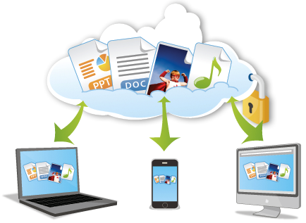

| INICIO |
CONCEPTOS BASICOS |
CLASIFICACIÓN |
SOFTWARE LIBRE Y COMERCIAL |
SOFWARE COMERCIAL |
DESCARGAS |
Uso del software libre y de forma responsable
Uso del software libre y de forma responsable
El software comercial que utilizamos regularmente en nuestros telefonos y computadoras, el cual incluye terminos de uso, en general,
no concede las libertades del software no comerciales , es importante conocer las libertades y restricciones que establece cada uno para su uso.

Licencias de uso
Todo software incluye en su sitio web, o como parte del software mismo, una secciòn que especfifica sus terminos de uso, se informa a los usuarios todo
lo relacinado con que se puede hacer con el programa, asi como el tipo de licencia que regula su manejo. La FSF elabora y promueve la Licencia Publica General GNU, que se trata de la licencia de
derechos de autor más utilizada en el mundo del software libre y código abierto.
Las licencias más utilizadas en la actualidad por empresas, instituciones y personas que crean contenidos multimedia y obras de carácter educativoo cultural. El programa GeoGebra maneja una licencia de este tipo
la Creative Commons Atribución-NoComercial- CompartirIgual para el contenido de su sitio web, que incluye documentos, archivos de idioma, imágenes y recursos.
Atribución CC BY. Esta licencia permite distribuir, remezclar, retocar y crear a partir de la obra original.
Atribución-CompartirIgual CC BY-SA. Autoriza a remezclar, retocar y crear a partir de la obra original, incluso con fines comerciales, siempre y cuando se dé crédito a la obra original (Atribución)
y se ofrezca la nueva obra bajo las mismas condiciones.
Atribución-SinDerivadas CC BY-ND. Permite la redistribución comercial o no comercial, siempre y cuando la obra circule integra y sin cambios.
Atribución- No comercial CC BY NC. Autoriza a otros a distribuir, remezclar, retocar y crear a partir de la obra orginal, siempre y cuando se dé el credito y el prodcuto obtenido se destine a uso no comercial.
Atribución- No Comercial- CompartirIgual CC BY- NC- SA. Esta licencia permite a otros distribuir, remezclar, retocar y crear a partir de la obra orginal, siempre que se dé el créditp, la nueva obra no se destine.
Atribución- NoComercial-SinDerivadas CC BY- NC- ND. Es la licencia más restricitiva: so´lo permite descargar la obra original y compartirla, siempre y cuando se le atribuya el crédito respectivo.
Ética en el uso del software
El software libre y en otro el comercial, y entre estos extremos existen opciones con mayores o menores libertades y limitantes que normalmente conllevan responsabilidades y obligaciones; por ejemplo, mencionar
el programa con el que se realizó una determinada obra o trabajo, o citar al autor en caso de que se utilice algún trabajo u obra de alguien más.